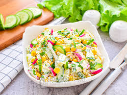

Наше меню
☕ Меню кафе «Coffee & Cozy»
1. Омлет «Французский утро» — 85 лей Легкий и воздушный омлет с сыром, зеленью и сливками. Подается с тостами и сливочным маслом. Отличный выбор для бодрого начала дня!

2. Блины с творогом и ванильным соусом — 80 лей Тонкие блинчики, фаршированные сладким творогом, поливаются теплым ванильным соусом. Любимое блюдо для утреннего настроения.

🥗 Салаты
1. Цезарь с курицей — 100 лей Классический салат с хрустящими гренками, курицей и пармезаном в фирменном соусе. Легкий, но сытный.

Огурцы, помидоры, листья салата, маслины и немного лимонного сока. Отлично подходит как гарнир к основным блюдам.
🍰 Десерты
1. Тирамису — 95 лей Воздушный итальянский десерт из маскарпоне и кофе. Готовится по оригинальному рецепту, тает во рту.

Шоколадный фондан — 90 лей Теплый десерт с жидким шоколадом внутри. Идеально сочетается с шариком мороженого.